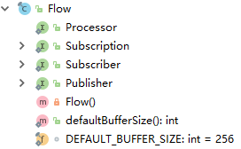
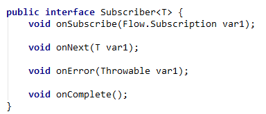
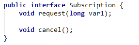
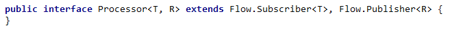
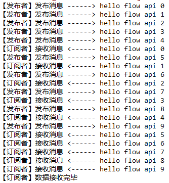
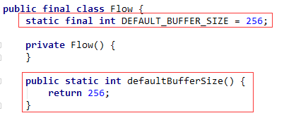
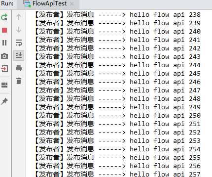
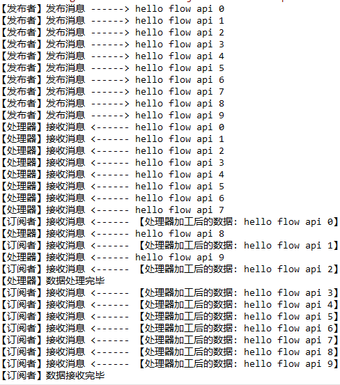

响应式编程（Reactive Programming）可以理解为一种处理数据项（Data Item）的异步流，即在数据项产生的时候，接收者就对其进行响应。在响应式编程中，会有一个数据发布者（Publisher）和数据订阅者（Subscriber），后者用于异步接收发布者发布的数据。在该模式中，还引入了一个更高级的特性：数据处理器（Processor），它用于将数据发布者发布的数据进行某些转换操作，然后再发布给数据订阅者。
总之，响应式编程是异步非阻塞编程，能够提升程序性能，可以解决传统编程模型遇到的困境。基于这个模型实现的有Java 9 Flow API、RxJava和Reactor等，这里主要介绍的是Java 9 Flow API的使用。
Flow接口概览
Java 9 新增了一个Flow接口，位于java.util.concurrent路径下，构成如下图所示：

其中Publisher为数据发布者，Subscriber为数据订阅者，Subscription为发布者和订阅者之间的订阅关系，Processor为数据处理器。
Publisher
Publisher部分的源码如下所示:

它是一个函数式接口，只包含一个subscribe方法，通过这个方法将数据发布出去。
Subscriber
Subscriber部分的源码如下所示: 
该接口包含了四个方法：
| 方法 | 描述 |
|---|---|
| onSubscribe | 订阅成功的回调方法，用于初始化Subscription，并且表明可以开始接收订阅数据了 |
| onNext | 接收下一项订阅数据的回调方法 |
| onError | 在Publisher或Subcriber遇到不可恢复的错误时调用此方法，Subscriber不再接收订阅消息 |
| onComplete | 当接收完所有订阅数据，并且发布者已经关闭后会回调这个方法 |
Subscription
Subscription部分的源码如下所示：

该接口包含了两个方法：
| 方法 | 描述 |
|---|---|
| request | 用于向数据发布者请求n个数据项 |
| cancel | 取消消息订阅，订阅者将不再接收数据 |
Processor
Processor部分的代码如下所示：

它是一个空接口，但是它继承了Publisher和Subscriber，所以它既能发布数据也能订阅数据。基于这个特性，它可以充当数据转换的角色，先从数据发布者那接收数据项，然后经过处理后再发布给最终的数据订阅者。
发布订阅示例
接下来我们举个数据发布和数据订阅的简单示例，以此了解Java 9 Flow API的使用。先入为主，直接贴出整个示例代码：
1 | public class FlowApiTest { |
上面使用JDK 自带的Publisher实现类SubmissionPublisher来发布 String类型的数据，然后用匿名实现类的方式创建了一个Subscriber实现类。接着使用SubmissionPublisher的subscribe方法来为发布者和订阅者建立关系。建立关系后，发布者就可以发布数据，接收者也开始接收数据。详细的说明注释里都写了，这里就不再赘述代码的逻辑了。
程序的输出如下所示：

模拟背压
所谓的背压（Backpressure）通俗的讲就是数据接收者的压力，传统模式下，发布者只关心数据的创造与发布，而当数据发布速率远高于数据接收速率的时候，数据接收者缓冲区将被填满，无法再接收数据。发布者并不关心这些，依旧不断地发送数据，所以就造成了IO阻塞。
基于响应式模型实现的Flow API可以很好地解决这个问题。在Java 9的Flow API定义中，Subscriber会将Publisher发布的数据缓冲在Subscription中，其长度默认为256：

假如当这个缓冲区都被填满后，Publisher将会停止发送数据，直到Subscriber接收了数据Subscription有空闲位置的时候，Publisher才会继续发布数据，而非一味地发个不停。
下面用代码来演示这个情况：
1 | public class FlowApiTest { |
上面代码中，我们在Subscriber的onNext方法中用下面的代码模拟延迟，让数据处理过程维持在2秒左右：
1 | try { |
然后数据发布量调整到了500，当程序启动的时候，由于数据发布的速度非常快（普通for循环），所以数据订阅者的数据缓冲区瞬间被填满，于是你会看到下面这个情况，只有当数据订阅者处理了一个数据的时候，数据发布者才会相应地再次发布一个新数据：

Processor示例
Processor的使用也很简单，其实它就是Publisher和Subscriber的结合体，充当数据处理的角色，通常的做法是用它来接收发布者发布的消息，然后进行相应的处理，再将数据发布出去，供消息订阅者接收。
下面是一个Processor用法的简单示例：
1 | public class FlowApiTest2 { |
程序运行结果如下所示：
